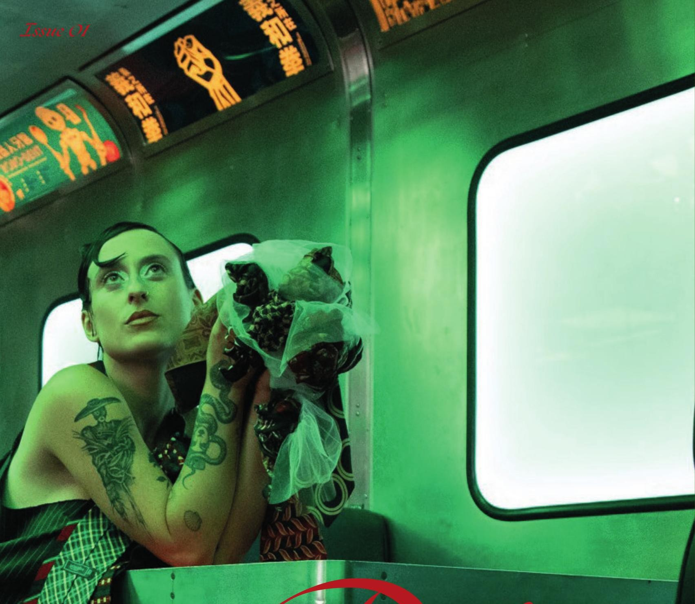
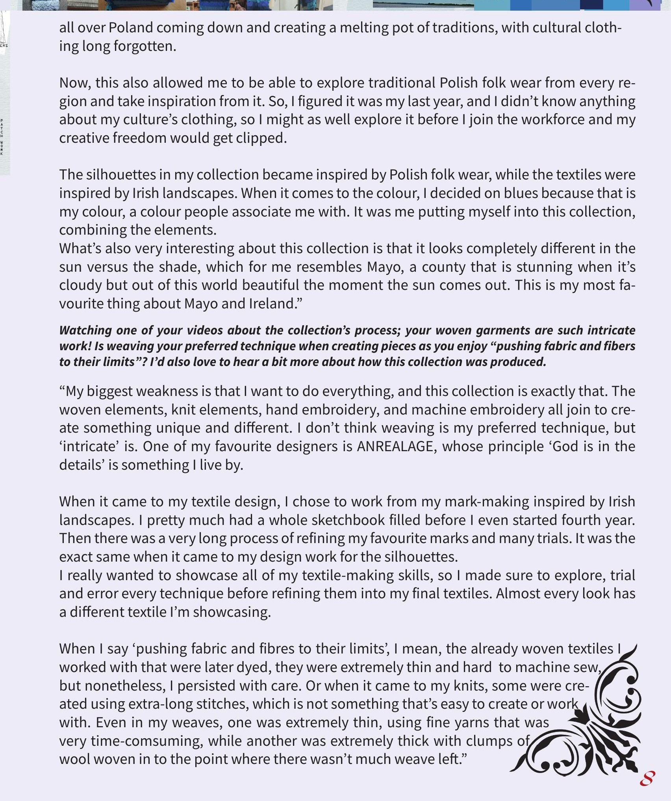
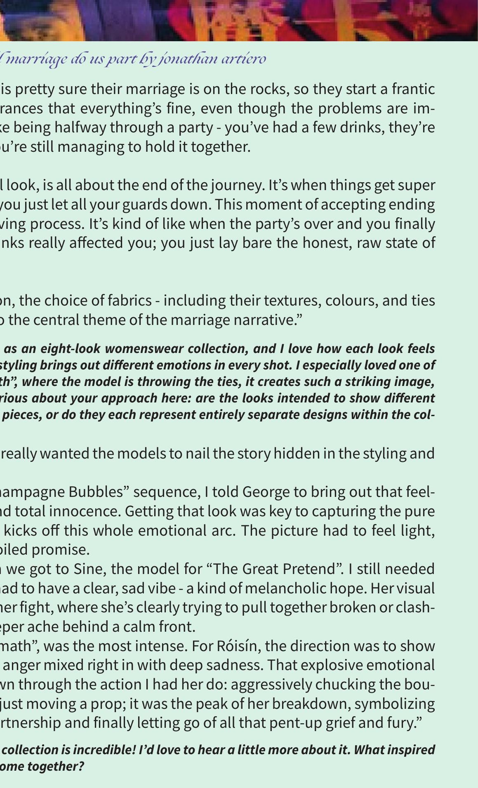

Póg
magazine
Scroll
Póg was created as a space to celebrate creativity in Ireland, all of it. From fashion to art, design to photography, any trade, any medium, anything that helps express who we are as a creative nation.
— The Editors
In This Issue
02 Stories
Cover Story
Knitwear
FolklorWiki Urawska
Polish costume silhouettes, dyed in the colours of the Irish coast — a collection about finally letting two cultures share the same thread.
Read the story
Interview
Eight Looks
Till Marriage Do Us PartJonathan Artiero
Taffeta, tulle and recycled neckties trace a marriage from champagne bubbles to the wreckage — staged inside a train that never arrives.
Read the story